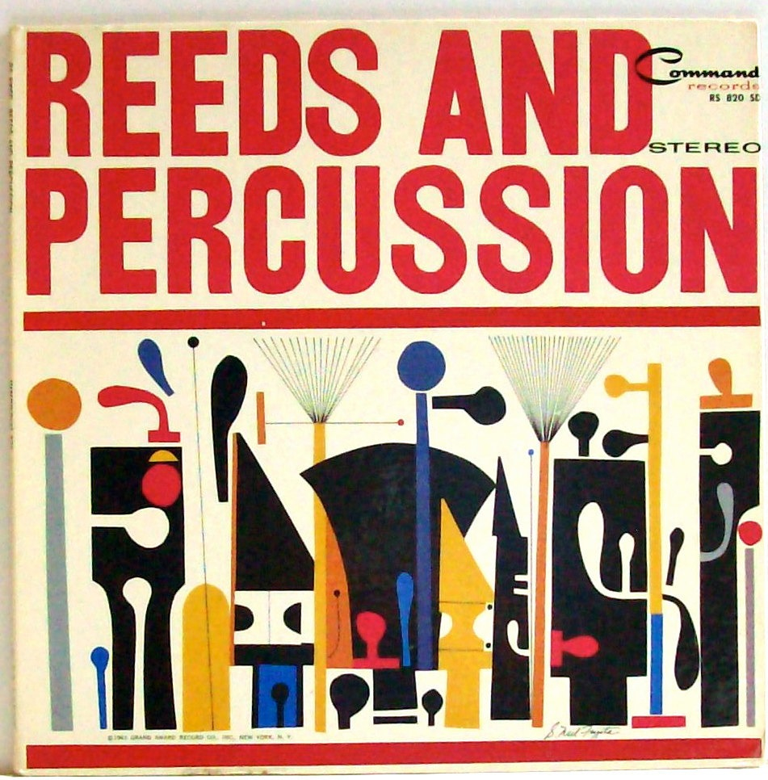
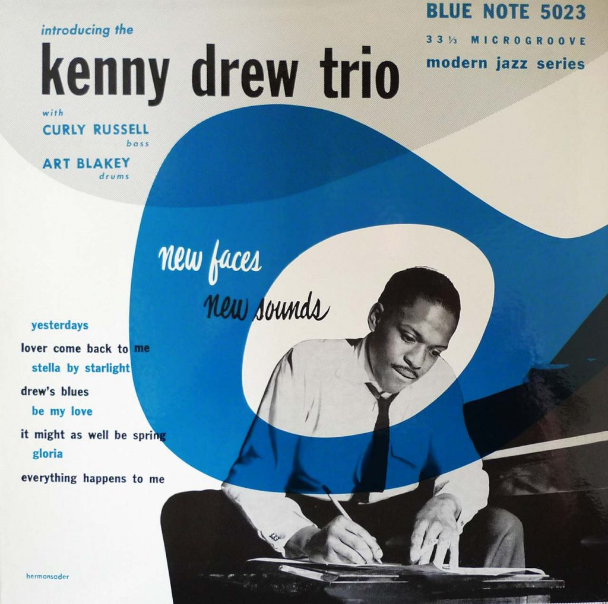

| Portada del Disco | Título del Disco | Músicos | Año de publicación | Comentarios |
|---|---|---|---|---|
| This is Benny Goodman | Ziggy Elman Benny Goodman Red Ballard Chris Griffin Vernon Brown Nate Kazebier |
1937 | Ferran13z: “¡Gran álbum! Cada pista es una joya, realmente muestra la profundidad y la versatilidad del jazz.” | |
|  | Reeds And Percussion | Enoch Light, Command All Stars |
1961 | VvVictorXxX: “Este álbum es muy relajante. Perfecto para una noche tranquila o para leer un buen libro.” |
|  | Kenny Drew Trio | Kenny Drew, Niels-Henning Ørsted Pedersen, Philip Catherine, Larry Ridley, Giovanni Tommaso, David Lee, Larry Ritchie |
1956 | nabil_esry: “Me encanta este álbum, es una mezcla perfecta de melodías suaves y ritmos cautivadores. ¡Muy recomendable!” |